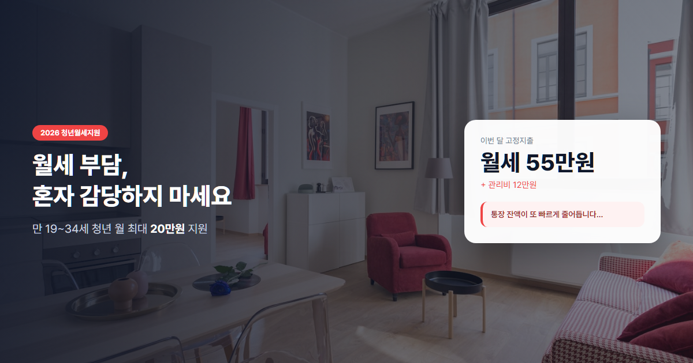
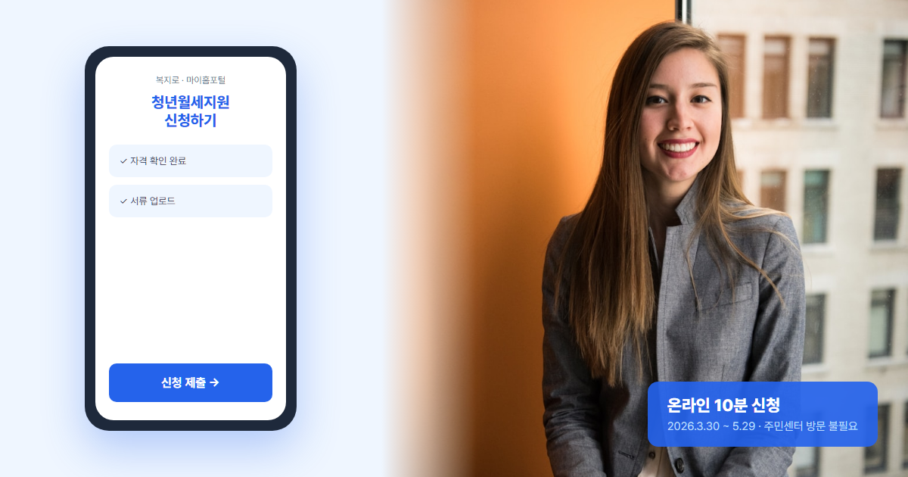
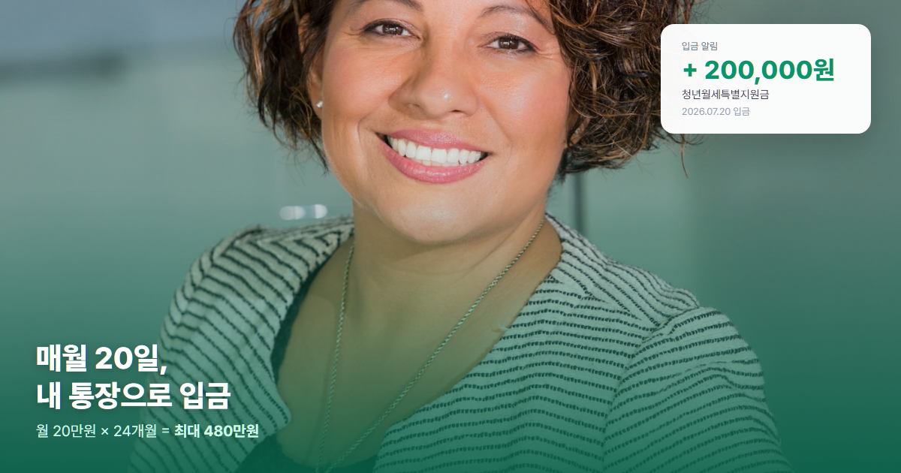

2026 청년월세지원사업 완벽정리 (월 20만원·24개월·신청자격·소득기준)
청년월세지원·청년월세특별지원 신청 자격부터 소득·재산 기준, 신청 방법까지
월급날만 기다리다, 월세 날에 통장이 텅 비는 기분— 혼자 사는 20대·30대라면 한 번쯤 겪어보셨을 겁니다. 정부 청년월세지원사업은 이런 부담을 덜어주기 위해 마련된 정책입니다. 월 최대 20만원, 최장 24개월이면 총 480만원까지 받을 수 있어요. 다만 신청 기간이 2026년 3월 30일~5월 29일로 한정되어 있으니, 자격만 된다면 서두르시는 편이 좋습니다. 올해는 청년월세특별지원 명칭으로도 불리며, 지자체마다 세부 운영 안내가 조금씩 다를 수 있습니다.
이 글을 쓰게 된 계기
저도 서울 원룸에서 혼자 살 때 월세 55만원에 보증금 1,000만원짜리 방을 썼어요. 월급의 30%가 월세로 나가니, 친구가 알려준 청년월세지원을 2023년에 처음 신청했습니다. 당시 복지로 앱에서 15분 만에 끝냈고, 두 달 뒤부터 매월 20일 20만원이 들어왔죠. 24개월 받으면 480만원— 그 돈으로 청약통장 불입액을 늘릴 수 있었어요.
그런데 주변에서 탈락하는 경우도 많더라고요. "부모님 명의 계약이라 반려됐다", "원가구 소득 초과", "보증금 환산액이 90만원 넘어서 제외"… 사유마다 다 달랐습니다. 저는 주민센터 상담을 두 번 받으며 반려 사유 TOP 3를 정리해 뒀고, 이번 글에 실어 공유합니다.
2026년 신청 기간(3월 30일~5월 29일)이 이미 지났다면, 내년을 대비해 자격을 미리 점검해 두세요. 생애 1회만 가능하기 때문에 언제 신청할지가 전략입니다. 월세가 가장 부담되는 시기, 또는 이사 직후 계약을 새로 맺은 시점에 신청하는 게 유리한 경우가 많아요.
아래 시뮬레이션·체크리스트는 제 경험과 마이홈포털·복지로 공지(2026년 6월 기준)를 바탕으로 작성했습니다. 지자체별 세부 기준은 거주지 주민센터에서 최종 확인하세요.

청년월세지원사업이란?
청년월세지원사업(청년월세특별지원)은 주거비 부담으로 독립 생활이 어려운 청년의 주거 안정을 위해 국토교통부·지자체가 함께 시행하는 한시적 지원 제도입니다. 2022년 첫 시행 이후 매년 반복 운영되고 있으며, 2026년에도 신규 신청이 가능합니다. 별도의 대출이 아니라 현금 지원이기 때문에 갚을 필요가 없다는 점이 가장 큰 장점입니다.
핵심 요약 한눈에 보기
| 항목 | 내용 |
|---|---|
| 지원금액 | 월 최대 20만원 |
| 지원기간 | 최장 24개월 (총 480만원) |
| 신청기간 | 2026.3.30 ~ 5.29 (17:00까지, 지자체별 상이) |
| 대상 연령 | 만 19~34세 |
| 신청 횟수 | 생애 1회 |
💡 한 줄 요약: 무주택 청년이 월세 70만원 이하·보증금 5천만원 이하 주택에 살면서, 소득·재산 기준을 충족하면 월 20만원까지 최대 2년간 지원받을 수 있습니다.
신청 자격 — 꼼꼼히 확인하세요
기본 자격
- 만 19~34세 독립 거주 무주택 청년
- 부모와 별도 거주 (주민등록상 분리)
- 임차보증금 5,000만원 이하 + 월세 70만원 이하 주택
- 본인 명의 임대차계약 (부모 명의 계약 불가)
소득 기준 (아래 2가지 모두 충족)
청년월세지원은 청년가구 소득과 원가구(부모 포함) 소득을 동시에 봅니다.
- 청년가구 소득: 기준 중위소득 60% 이하
- 1인가구 월 154만원 이하
- 2인가구 월 253만원 이하
- 원가구 소득: 기준 중위소득 100% 이하
- 3인가구 월 536만원 이하
- 4인가구 월 657만원 이하
재산 기준
- 청년가구 재산: 1.22억원 이하
- 원가구 재산: 4.7억원 이하
제외 대상 — 해당되면 신청 불가
- 주택 소유자 (분양권·입주권 포함)
- 직계존속(부모) 소유 주택의 임차인
- 공공임대주택 거주자
- 보증금 5,000만원 초과 주택 거주자
- 보증금·월세 환산액 90만원 초과
- 지자체 유사 월세 지원 사업 중복 수혜자
신청 방법

온라인 신청
- 복지로 (bokjiro.go.kr)
- 마이홈포털 (myhome.go.kr)
- 모바일 앱으로도 신청 가능 (복지로·마이홈 앱)
오프라인 신청
- 거주지 행정복지센터(주민센터) 방문
- 원칙적으로 본인 직접 신청 (대리 신청은 제한적)
필요 서류
- 신분증
- 임대차계약서 사본
- 월세 이체 증빙 (통장 사본·이체내역)
- 소득·재산 증빙 서류
- 가족관계증명서
지급 방식
- 매월 20일경 본인 명의 계좌로 입금
- 실제 납부 월세가 20만원 미만이면 실납부액만 지원
- 군 입대·해외 체류 시 일시 정지 후 복귀 시 재개 가능
- 심사·지급까지 보통 신청 후 1~2개월 소요
💡 청년월세지원 꿀팁
- 생애 1회만 신청 가능 → 월세·거주 계획을 보고 시기를 신중히 정하세요.
- 24개월을 연속으로 받을 필요는 없습니다. 중간 중단 후 재개도 가능합니다.
- 반드시 본인 명의 임차 계약이어야 합니다. 부모 명의는 불가합니다.
- 소득·재산이 변경되면 반드시 신고해야 합니다.
- 신청 마감을 놓치면 다음 해까지 기다려야 합니다.
자주 묻는 질문 (FAQ)
Q1. 부모님 소득이 높으면 무조건 못 받나요?
무조건은 아닙니다. 원가구 소득이 기준 중위소득 100% 이하여야 하므로, 부모 소득이 높으면 탈락할 수 있습니다. 다만 청년 본인 소득이 낮고 원가구 합산 소득이 기준 이하면 신청 가능합니다. 사전 자격 진단을 권합니다.
Q2. 학생도 신청 가능한가요?
만 19~34세이고 독립 거주·무주택·소득·재산 기준을 충족하면 가능합니다. 아르바이트·장학금 등이 소득에 포함될 수 있으니 증빙 서류를 준비하세요.
Q3. 월세를 카드로 내도 되나요?
지원금 지급을 위해 월세 납부 증빙이 필요합니다. 계좌 이체 내역이 가장 확실하고, 카드 결제만 있는 경우 인정 여부는 지자체·심사 기준에 따라 달라질 수 있어 이체 증빙을 권장합니다.
Q4. 이사하면 어떻게 되나요?
이사 후에도 자격 요건(보증금·월세 한도, 무주택 등)을 충족하면 변경 신고 후 지원을 이어갈 수 있습니다. 새 임대차계약서와 이체 증빙을 다시 제출해야 합니다.
Q5. 다른 청년 정책과 중복 가능한가요?
지자체 유사 월세 지원과는 중복 불가입니다. 청년내일저축계좌·청년주택드림청약통장 등 다른 청년 정책과의 중복은 항목별로 다르니, 신청 전 복지로·주민센터에서 확인하세요.
Q6. 프리랜서·3.3% 원천징수자도 신청 가능한가요?
가능합니다. 다만 소득금액증명원 또는 원천징수영수증으로 연간 소득을 증빙해야 해요. 불규칙한 수입은 최근 1년 기준으로 환산되므로, 신청 전 소득 합산이 기준 중위소득 60% 이하인지 계산해 보세요.
Q7. 군 복무 중이거나 예정이면 어떻게 되나요?
입대 시 지원 일시 정지 후 전역·복귀 시 잔여 기간만큼 재개할 수 있습니다. 단, 만 34세 상한과 생애 1회 조건은 그대로 적용되므로, 복무 기간과 신청 시기를 미리 맞춰 두는 게 좋습니다.
반려 사례 3가지 — 실제로 많이 걸리는 이유
주민센터 상담과 온라인 커뮤니티 후기를 종합해, 가장 흔한 반려 패턴 3가지를 정리했습니다. 아래에 해당하면 신청 전에 조건을 바꾸거나 시기를 조정하세요.
| 반려 사례 | 상황 | 반려 사유 | 해결 방법 |
|---|---|---|---|
| 사례 1 — 부모 명의 계약 | 대학생 A(23세), 부모가 임대인과 계약·A가 실거주 | 임대차계약 당사자가 청년 본인이 아님 | 계약 만료 후 본인 명의로 재계약 후 신청 |
| 사례 2 — 원가구 소득 초과 | B(28세) 연 3,200만원, 부모 합산 연 9,500만원(4인 가구) | 원가구 소득이 기준 중위소득 100% 초과 (4인 월 657만원 한도) | 부모 소득 감소 시점·독립 거주·분리세대 확인 후 재신청 |
| 사례 3 — 보증금·월세 환산 초과 | 보증금 4,800만원 + 월세 35만원 원룸 (환산 월 91만원) | 보증금 환산액 포함 월 90만원 한도 초과 | 보증금·월세 합산이 90만원 이하인 매물로 이사 |
⚠️ 신청 전 꼭 피할 함정
- 부모와 같은 주소지 — 주민등록 분리·별도 거주 증명이 안 되면 탈락합니다.
- 월세 현금 납부 — 이체·카드 증빙 없으면 지급 심사에서 보류될 수 있어요.
- 신청 마감일 17:00 착각 — 지자체별 마감 시각이 다릅니다. 당일 오전에 제출하세요.
- 소득 변경 미신고 — 취업·퇴사 후 소득이 늘면 환수 대상이 될 수 있습니다.
실전 시뮬레이션 — 소득·연령별 3가지 케이스
아래는 2026년 기준 중위소득을 반영한 가상 신청 사례입니다. 실제 심사는 건강보험·국세청 자료와 교차 확인됩니다.
| 항목 | 케이스 A — 사회초년생 | 케이스 B — 대학원생 | 케이스 C — 30대 초반 직장인 |
|---|---|---|---|
| 연령 | 만 24세 | 만 27세 | 만 31세 |
| 가구 | 1인 독립 거주 | 1인 (부모 3인가구와 분리) | 2인 (배우자와 독립, 무주택) |
| 청년가구 월소득 | 220만원 (연 2,640만) | 120만원 (아르바이트+RA) | 380만원 (연 4,560만) |
| 원가구 월소득 | 480만원 (3인) | 510만원 (3인) | 520만원 (4인, 배우자 부모 포함) |
| 월세·보증금 | 45만원 / 1,000만원 | 38만원 / 500만원 | 65만원 / 3,000만원 |
| 소득 기준 충족 | ✅ (1인 154만원 이하… 초과 → 탈락) | ✅ 120만 ≤ 154만 | ✅ 380만 ≤ 253만(2인)… 초과 → 탈락) |
| 원가구 소득 | ✅ 480만 ≤ 536만 | ✅ 510만 ≤ 536만 | ✅ 520만 ≤ 657만 |
| 예상 월 지원 | — (소득 초과) | 20만원 (24개월 = 480만) | — (청년가구 소득 초과) |
| 승박 코멘트 | 연봉 올리면 탈락 — 신청 시기 조절 | 가장 유리한 전형적 케이스 | 2인가구 소득 한도 253만원 주의 |
케이스 B처럼 청년 본인 소득은 낮고 원가구 소득만 통과하는 경우가 실제로 가장 많이 승인됩니다. 반대로 케이스 A·C는 '원가구는 되는데 청년 소득이 살짝 넘는' 패턴— 연봉 협상·입사 시기를 조정하거나, 소득이 낮은 시점(프리랜서 비수기 등)에 신청 타이밍을 맞추는 전략을 씁니다.

신청 실전 — 제가 쓴 순서 그대로
- 마이홈포털·복지로에서 사전 자격 조회 (5분)
- 임대차계약서·월세 이체내역 PDF 준비 (최근 3개월)
- 가족관계증명서 — 주민센터 또는 온라인 발급
- 복지로 앱 → 청년월세특별지원 → 신청 → 전자서명
- 심사 결과 SMS (보통 4~8주) → 승인 시 익월 20일부터 입금
✅ 청년월세지원 신청 전 체크리스트
- ✅ 만 19~34세 해당
- ✅ 무주택·분양권·입주권 미보유
- ✅ 부모와 주민등록상 별도 거주
- ✅ 본인 명의 임대차계약
- ✅ 보증금 5,000만원 이하
- ✅ 월세 70만원 이하 (환산액 90만원 이하)
- ✅ 청년가구 소득 기준 중위소득 60% 이하
- ✅ 원가구 소득 기준 중위소득 100% 이하
- ✅ 청년가구 재산 1.22억 이하
- ✅ 원가구 재산 4.7억 이하
- ✅ 생애 1회 미사용 확인
- ✅ 지자체 유사 월세 지원 미수혜
- ✅ 월세 계좌 이체 증빙 확보


마무리
청년월세지원사업은 갚을 필요 없는 순수 지원금입니다. 월 20만원이면 1년에 240만원, 2년이면 480만원— 내집마련 저축의 시작 자금으로도 충분히 의미 있습니다. 신청 기간(2026.3.30~5.29)을 놓치면 1년을 기다려야 하니, 자격이 되신다면 지금 바로 준비하세요.
다음에는 청년주택드림청약통장 가이드도 이어서 정리할 예정입니다. 그전에 내 소득이 기준에 맞는지, 목표 시점까지 얼마나 걸리는지 미리 계산해 보시면 좋습니다.

본 글은 2026년 6월 기준 일반 정보이며, 정확한 자격·소득·재산 기준과 신청 기간은 마이홈포털·거주지 지자체·주민센터에서 최종 확인하시기 바랍니다. 지원금액·기간·마감 시각은 연도·지역별로 달라질 수 있습니다.